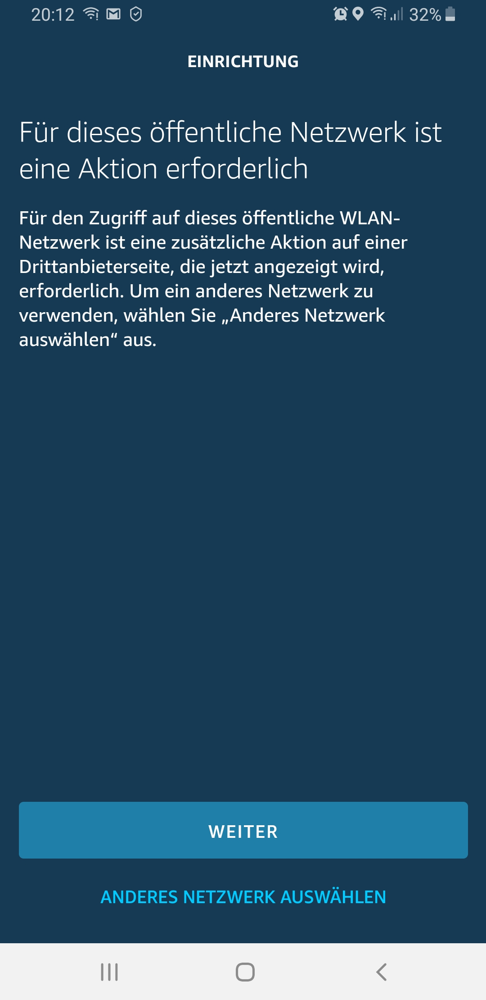

Hallo habe folgendes Problem: Habe mir einen Amazon Echo Dot geholt und er kann sich nicht mit meinen Netzwerk verbinden. Habe ca. 30 Minuten mit Amazon telefoniert und ist nicht dabei rausgekommen außser das Magenta schuld sein soll. Bei mir zuhause hab ich den Huawei Würfel und ist in meiner näheren Umgebung kein anderes Netzwerk.(hab laut Amazon das falsche Netzwerk ausgewählt). Sollte immer eine Aktion auf einer Drittanbieter Seite durchführen, nur macht es mir nichts auf.

Anbei ein Screenshot von meinen Handy, vielleicht kann mir jemand von euch helfen. lg
MarioM
Aber du hast schon ein WLAN mit Verschlüsselung? Sieht eigentartig aus - das kam bei mir gar nicht
...
Wie gut kennst du dich mit dem Würfel aus? Sonst würde ich mal versuchen ein separates WLAN einzurichten, dem einen ganz anderen Namen geben und nochmals versuchen ...
was manchmal wichtig ein wichtiger Punkt bei solchen geräten ist, hast du sicherheitshalber den Business APN eingerichtet, damit du eine öffentliche dynamische IP Adresse bekommst?
Oder scheitert es schon komplett das der Echo Dot dein WLAN sieht?
was manchmal wichtig ein wichtiger Punkt bei solchen geräten ist, hast du sicherheitshalber den Business APN eingerichtet, damit du eine öffentliche dynamische IP Adresse bekommst?
Oder scheitert es schon komplett das der Echo Dot dein WLAN sieht?
LG,
DevRo
Die öffentliche IP Adresse brauchst du für den Dot nicht ... habe ich auch nicht und ich konnte den Dot einwandfrei mit dem WLAN verbinden
IT-Freak
Es sieht so aus, als hättest du das falsche WLAN erwischt oder bei deinem WLAN eine vorschalte Seite, was hin und wieder bei Gäste WLANs vorkommt
Christian_E
Ich habe auch mehrere Alexas im Magenta Netz laufen - da sollte es keine Probleme geben.
Mein Vorschlag - noch mal zurück setzen und in Ruhe starten.
Alle anderen Gerät funktionieren problemlos im WLAN oder?
fabsl9201
So Leute...
habe schon mehrere Fire-Tv-sticks Laptop, Drucker und so weiter über den Router laufen funktioniert alles tadellos... der dot findet mein Welan fordert mich auf das Netzwerk-Passwort einzugeben und schreibt dann diese Meldung(siehe oben). ist das richtige Wlan und das richtige Passwort.. ;-)
MarioM
On 12/14/2019 at 5:53 PM, fabsl9201 said:
So Leute...
habe schon mehrere Fire-Tv-sticks Laptop, Drucker und so weiter über den Router laufen funktioniert alles tadellos... der dot findet mein Welan fordert mich auf das Netzwerk-Passwort einzugeben und schreibt dann diese Meldung(siehe oben). ist das richtige Wlan und das richtige Passwort.. ;-)
Kannst du mal probieren, mit deinem Handy einen Hotspot zu machen und das WLAN zu verwenden?
Eventuell liegt es gar nicht am WLAN, sondern am Dot?
Oder hast du die Möglichkeit irgendein anderes WLAN zu verwenden?
Klaus Schmelzer-Martini
Hallo
Ich haben das gleiche Problem. Auch ich soll beim Drittanbieter eine Aktion ausführen.
Der Tip mit dem Hotspot war prima. Habe mit 3AT eine Verbindung hergestellt und siehe da, Installation läuft problemlos durch.
Also haben wir Mal wieder ein Problem mit dem lieben Würfel.
Der war neulich auch die Ursache das mein Samsung smart TV massive Verbindungsprobleme hatte.
Ich musste LTE abwählen, dann lief er wieder.
Auch da lief die Fehleranalyse über den Hotspot mit 3AT.
Wie nun aber der Echo dot mit dem Würfel zum laufen gebracht werden kann weiß ich auch noch nicht.
Vielleicht kann jemand mit der Info eine Lösung finden.
Bearbeitet
von Klaus Schmelzer-Martini
Autokorrektur
MarioM
On 25/12/2019 at 12:50 AM, Klaus Schmelzer-Martini said:
Hallo
Ich haben das gleiche Problem. Auch ich soll beim Drittanbieter eine Aktion ausführen.
Der Tip mit dem Hotspot war prima. Habe mit 3AT eine Verbindung hergestellt und siehe da, Installation läuft problemlos durch.
Also haben wir Mal wieder ein Problem mit dem lieben Würfel.
Der war neulich auch die Ursache das mein Samsung smart TV massive Verbindungsprobleme hatte.
Ich musste LTE abwählen, dann lief er wieder.
Auch da lief die Fehleranalyse über den Hotspot mit 3AT.
Wie nun aber der Echo dot mit dem Würfel zum laufen gebracht werden kann weiß ich auch noch nicht.
Vielleicht kann jemand mit der Info eine Lösung finden.
Kannst du mal das WLAN umstellen? Anderer Name und ohne Verschlüsselung? Nur zum Testen?
SigiBlue
Ist das normal, das beim Smartphone in der Statusleiste beim Wlan Symbol ein Rufzeichen dabei ist?
Kann mich nicht erinnern, das bei mir gesehen zu haben..
Also ich kenn das Rufzeichen nur, wenn Wlan zwar vorhanden und verbunden ist aber kein Internet verfügbar ist. Dann sehe ich bei mir daheim auch hin und wieder so ein Rufzeichen.
IT-Freak
vor 3 Stunden schrieb 5igi3lue:
Ist das normal, das beim Smartphone in der Statusleiste beim Wlan Symbol ein Rufzeichen dabei ist?
Kann mich nicht erinnern, das bei mir gesehen zu haben..
Beim Einrichten des ersten Echo oder Fire TV Produktes baut dieses ein WLAN auf mit dem man sich verbindet. Dort wird dann eine HTTPS Verbindung zwischen Echo und Smartphone aufgebaut über diese dann die Konfiguration an den Echo übertragen wird.
Nachdem der Echo zu dem Zeitpunkt kein Internet hat, erscheint das Rufzeichen, da das Handy dann mit dem Echo und nicht mit dem Internet verbunden ist.
Edit: Sprich das ist bei der Echo Einrichtung normal.
Bearbeitet
von IT-Freak
Erwin
Ich habe leider ein sehr, sehr ähnliches Problem. Darf man wissen wie deines gelöst wurde?
Untenstehend habe ich folgendes an Huawei gesendet. Zuerst landete ich bei den Chinesen, dann irgendwo anders, dann wieder wo anders und jetzt wieder bei den Chinesen ... und keiner fühlt sich zuständig .... Und Magenta wird sich auch nicht zuständig fühlen. Bin schon am verzweifeln.
Ich habe folgendes Problem:
Leider kann ich mein "Echo plus" von Amazon nicht einrichten. Nach stundenlangem Bemühen bin ich schon am verzweifeln. Da kein technisches Problem des Echo-Gerätes vorliegt (das wurde rausgefunden), erhärtet sich immer mehr der Verdacht, dass es am Router bzw. am Netzbetreiber liegen könnte.
Mein Router ist der "HUAWEI LTE CPE E5170" / Model E5170s-22 / Huawei AF22
S/N: ChS7N15C23000588
Ist an dem Router etwas bekannt, dass vor allem die Sprachbefehle geblockt werden können? (Portfreigabe etc.)?
Welche WLAN-Channel werden genützt und kann man die wechseln?
Wie kann ich mich in den Router einloggen?
Oder können Sie mir generell helfen dieses Problem aus dem Weg zu schaffen.
Ich bedanke mich im vorhinein für ihre Hilfe und verbleibe mit freundlichen Grüßen!
Erwin
Nachtrag: und ja ich habe an beiden Geräte (Echo plus 2. Gen. und den Huawei- Würfel) zum X-ten Mal einen Neustart gemacht, auf Werkseinstellung gebracht, vom Strom getrennt etc. ... das übliche Programm halt bei Troubles ...
Christian_E
Hallo Erwin,
Besteht die Möglichkeit eines Gegenchecks?
Vorschlag - mach doch dein Smartphone zum Hotspot und versuche da den Connect mit dem Echo.
Wenn das geht, dann ist ganz klar, dann ist es der Router oder das Modem.
Kannst du das mal testen?
LG
Christian
Erwin
Hallo Christian, danke für den Tipp. Hab das noch nicht ausprobiert und werde das auch machen, wenn ich mich schlau gemacht habe wie ein Hotspot zu erstellen ist. Hab das noch nie gemacht - weil bis lang noch nie gebraucht
Erwin
Hallo Christian, alexa konnte sich über Hotspot verbinden!
Ich habe bereits 5 andere nagelneue Router ausprobiert aber keiner funktionierte
Christian_E
Ok gut.
5 neue Router?
Das ist komisch, denn im Grunde ist die Alexa pflegeleicht. Da sollte nichts an Router nötig sein zum Einstellen. Und gleich 5 neue Router haben nicht funktioniert?
Was waren das für Hersteller?
LG Christian
Erwin
2 von Magenta selbst, einer bei Hartlauer, einer im Mediamarkt ... waren doch nur vier
leider kenn ich die genauen Bezeichnungen nicht. komisch war, dass alle stationären- also im Geschäft befindlichen Router funktionierten, nur die vier getesteten nicht. ich würde mir einen neuen zulegen aber das kann ich nur machen, wenn das auch hin haut.
Ja doch es waren doch fünf. bei Magenta kam noch der "Würfelturm" dazu.
Bei Magenta waren alle verfügbaren durchgetestet worden. Die habe ich dort in Amstetten schon zur Verzweiflung gebracht.
Bearbeitet
von Erwin
Erwin
Ich wollte mich um 21:00 Uhr mit Magenta Kundenservice telefonisch auseinandersetzen weil auf der Homepage MO-FR bis 22:00 Uhr stand. Nach der Tastaturdrückerei kam die Meldung, dass der Kundenservice bis 20:00 Uhr anwesend wäre. Liebe Website - Mitarbeiter aktualisiert diese Webseite!
Bearbeitet
von Erwin
Christian_E
Danke Erwin.
Wobei die Alexas auch im Magenta Netz sehr verbreitet sind und funktionieren.
Wir müssen das Detail für Detail durchgehen, denn ich kann mir echt nicht vorstellen, dass kein neuer Router funktioniert.
Bei den getesteten Routern gab es nur mit Alex Probleme? Alles andere hat funktioniert?
Was hast du denn in der Alexa App bei den Geräten gesehen oder was konntest du überhaupt sehen.
Bitte schreib mal alles hier auf, was dir aufgefallen ist.
Danke!!
Erwin
Ich bedanke mich bei
dir
Christian.
Mein vorhaben ist jetzt, mir zwei Router vom Magentaladen leihweise zu holen und alles nochmals schritt für schritt durchzugehen. Ich kann nur hoffen, dass die mir da entgegenkommen und sie mir auch zur Verfügung stellen.
Christian_E
Gute Idee.
Evtl. nimm doch die Alexa mit in den Shop und teste es gleich Vorort.
Das sollte erlaubt sein und dann kannst du dir vielleicht einen Weg sparen.
Gerne helfen wir dir weiter aber schreib alles auf, was du an Meldungen siehst, damit wir das nachvollziehen können.
Viel Erfolg.
LG
Christian
MarioM
32 minutes ago, Erwin said:
Ich bedanke mich bei
dir
Christian.
Mein vorhaben ist jetzt, mir zwei Router vom Magentaladen leihweise zu holen und alles nochmals schritt für schritt durchzugehen. Ich kann nur hoffen, dass die mir da entgegenkommen und sie mir auch zur Verfügung stellen.
Was mir dazu noch einfallen würde: Musstest du bei deinen Versuchen bei dir jedes mal das Passwort neu eingeben?
Amazon merkt sich ja Passwörter, um das Teilen leichter zu machen? Eventuell mal die WIFI Passwörter im Amazon Konto löschen?
Wenn du die Option nicht aktiviert hast, vergiss den Post einfach
Liebe Grüße
Christian_E
Auf alle Fälle ein guter Tipp.
fabsl9201
Hallo habe folgendes Problem: Habe mir einen Amazon Echo Dot geholt und er kann sich nicht mit meinen Netzwerk verbinden. Habe ca. 30 Minuten mit Amazon telefoniert und ist nicht dabei rausgekommen außser das Magenta schuld sein soll. Bei mir zuhause hab ich den Huawei Würfel und ist in meiner näheren Umgebung kein anderes Netzwerk.(hab laut Amazon das falsche Netzwerk ausgewählt). Sollte immer eine Aktion auf einer Drittanbieter Seite durchführen, nur macht es mir nichts auf.
Anbei ein Screenshot von meinen Handy, vielleicht kann mir jemand von euch helfen. lg
Erwin
Aktueller Stand:
Mitarbeiter durfte meinem Wunsch nicht nachkommen. Wäre nur über einen Neuvertrag mit optional anschließender Stornierung möglich gewesen. Ich rein in den Mediamarkt wo ich mit einem sehr bemühten Mitarbeiter eine Fritzbox anhängte (mit und ohne Passwort). Funktionierte auch nicht. Dann kopelten wir den Echo plus und den Dot - und siehe da beide liefen. Dann probierten wir es nochmal mit drei neuen Ech plus' und da ging wieder nichts. Ich tauschte den plus um und nahm den Echo 3. Gen. kopelte ihn zuhause und nach anfänglichen Schwierigkeiten reagierte Alexa auf meine Spracheingabe.
Der ganze "[****]" dürfte an Amazons Echo plus gelegen sein.
Ich möchte an dieser Stelle meinen Dank aussprechen an alle die mir Tipps gegeben haben. Vor allem ein großes Dankeschön an Christian_E für seine Ausdauer und Hilfestellung!
Christian_E
Dafür sind wir ja da.
Freut mich, dass es geklappt hat und wenn wir wieder mal helfen können - jederzeit gerne.
LG Christian
tombufry
Hallo zusammen,
ich habe genau das gleiche Problem, eins zu eins
.
War gestern mit dem Echo Dot bei Saturn, dort konnten sie ihn ohne Probleme verbinden. Die Mitarbeiterin hat mir den Echo Dot zur Sicherheit umgetauscht falls der ein Softwareproblem hat. Heute will ich den neuen koppeln und wieder nix. Gibt es andere kreative Lösungsvorschläge? Möchte eigentlich weder Cube noch Echo Dot umtauschen. Habe bereits einen Echo (2.Gen.) der wunderbar funktioniert.
Danke
IT-Freak
Mit welchem WLAN ist das Telefon verbunden, wenn du versuchst den Echo einzurichten. Möglicherweise ist das Handy vor dem verbinden mit einem 'öffentlichen' WLAN verbunden und möchte deshalb den Echo damit verbinden.
tombufry
Nein, immer mit meinem Heimnetzwerk und dem Magenta-Würfel
MarioM
On 1/18/2020 at 8:49 PM, tombufry said:
Nein, immer mit meinem Heimnetzwerk und dem Magenta-Würfel
Mich würde interessieren welche Verschlüsselung bei Saturn verwendet wurde?
Kannst du bei dir einfach mal Umstellen und durchprobieren? Wenn das nicht zu aufwendig ist? Kann mir zwar nicht vorstellen, dass es daran liegt, aber mir fällt aktuell nix anderes mehr ein
Ich schrieb am 17. Jänner (siehe weiter oben) bereits:
Aktueller Stand:
Mitarbeiter durfte meinem Wunsch nicht nachkommen. Wäre nur über einen Neuvertrag mit optional anschließender Stornierung möglich gewesen. Ich rein in den Mediamarkt wo ich mit einem sehr bemühten Mitarbeiter eine Fritzbox anhängte (mit und ohne Passwort). Funktionierte auch nicht. Dann koppelten wir den Echo plus und den Dot - und siehe da beide liefen. Dann probierten wir es nochmal mit drei neuen Echo plus' und da ging wieder nichts. Ich tauschte den plus an Ort und stelle um und nahm den Echo 3. Gen. - koppelte ihn zuhause und siehe da Alexa (Echo) reagierte auf meine Spracheingabe.
Der ganze Mist dürfte an Amazons Echo plus gelegen sein. Ich ging da nicht weiter auf Ursachenforschung.
Mittlerweile besitze den Echo Dot, den Echo und den Echo Show 8 und alle ließen sich anstandslos verbinden.
Schönen Gruß!
MarioM
15 hours ago, Erwin said:
Mittlerweile besitze den Echo Dot, den Echo und den Echo Show 8 und alle ließen sich anstandslos verbinden.
Sehr interessant
... und auch komisch, aber super, dass du nun mit dem Show 8 keine Probleme hast.
{kind=link}
{kind=link}